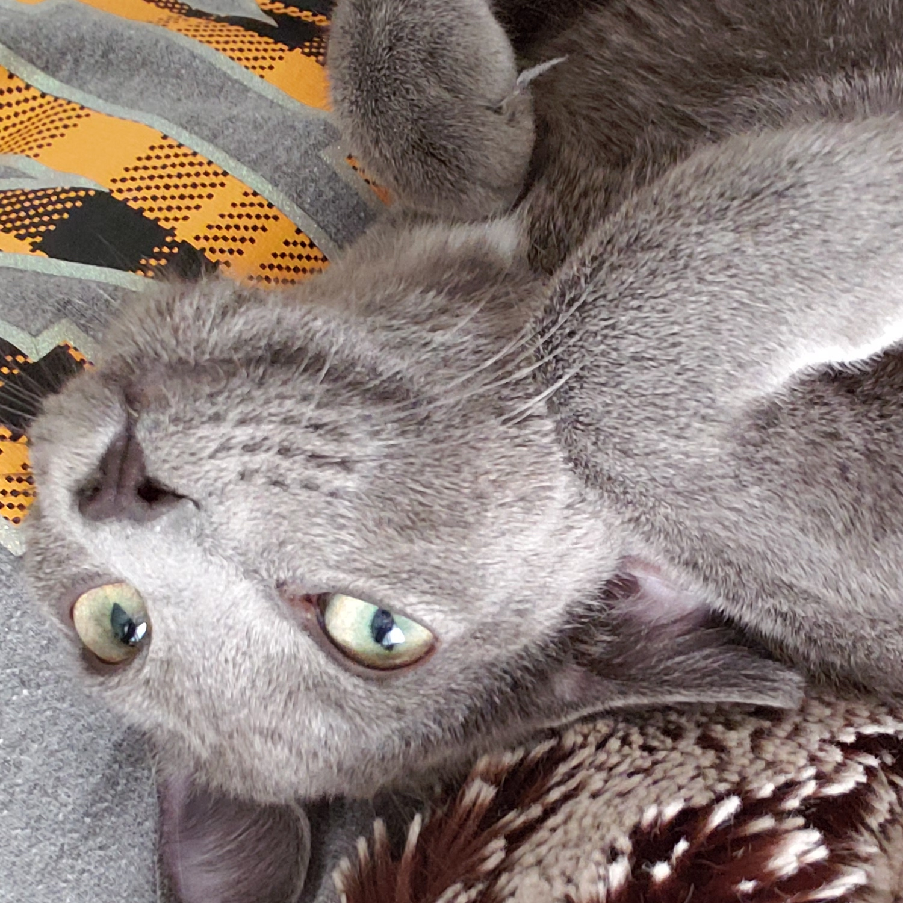
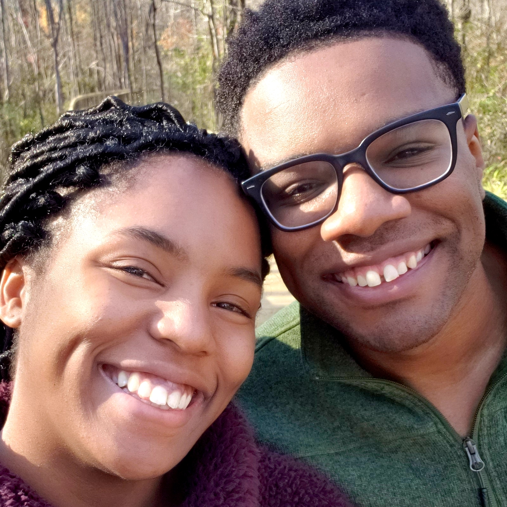

Hello! My name is Erin. I’m a recently moved psychology graduate from St. Louis, Missouri. I now live in Atlanta, Georgia with my wonderful boyfriend and two cats, Sabi and Ori. I’m a proud nerdy ambivert that loves historical fantasy, gaming, literature, anime, Dungeons&Dragons, drawing, self-improvement, nutrition, wellness and sweets! You can easily win my undivided attention with a slice of cake.
For a long time, I thought I’d be working in health for either animals or people. As a child, I aspired to work in veterinary medicine. After high school, I found my love for mental health and therapy, and thought I’d go into occupational therapy. After I graduated college, however, I found I was happiest typing away code on my computer.
It’s a field that brought out my dormant creativity and love for puzzle-solving. While I still love caring for both animals and people, I’m hoping a career in code will pull it together via indirect work on useful applications, websites and resources.
At present, I consider myself a beginner. I first learned about coding languages through my boyfriend and began my own learning with courses on Udemy. I enjoy working with HTML and CSS, and am still getting the hang of Python and Javascript. I don’t have the best memory, so it’s nice to have access to online resources while I learn. I’m grateful for the opportunity to work alongside a team at DigitalCrafts and look forward to meeting everyone in May!